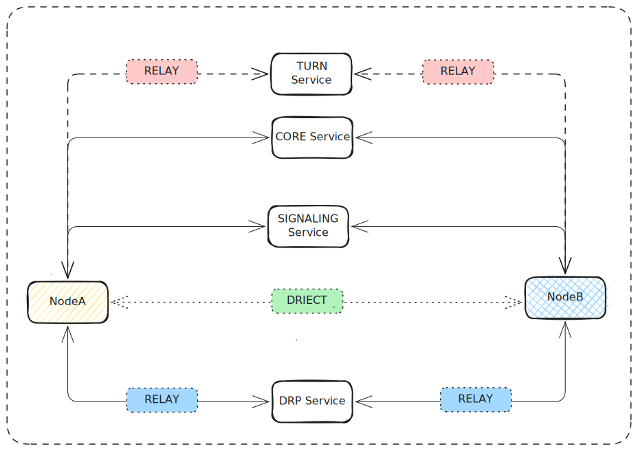

LINKANY
About¶
linkany built for using private wireguard network easily, zero trust arch and wireguard protocol support. when using linkany, you need't configure wireguard manually, everything is auto. linkany can may connect kinds of devices, like mac os、linux、freebsd、mobile etc.
Architecture¶

Install¶
Download the linkany package from Downloads, choose actual platform you need.
Quick Start¶
Install linkany, then run linkany command, it will register to linkany management service, then you can create a network yourself at web UI. After that, you need not configure wireguard manually, linkany will auto manage your wireguard network. all operations can be done on the web UI, you can visit http://linkany.io and logon to manage your linkany network.
Create Group¶
You can create a group on the web UI, a group is a wireguard network, you can add devices to the group, and all devices in the group can connect to each other.
Share Group¶
You can share the group to other users, they can join the group and connect to your devices. You can also share the group to a team, all members in the team can join the group and connect to your devices.
Join Group¶
When a group owner share the group to you, you can join the group by clicking the link in the email or web UI. After joining the group, you can connect to the devices in the group.
Add Devices¶
You can add devices to the group, the linkany node will receive
Direct¶
Node connect to rmmote using p2p, as all node compose mesh connect, when direct fails, node to node will change to 'relay' type auto.
Relay service¶
TURN¶
TURN(Traversal Using Relays around NAT) is a protocol that allows clients to connect to each other when they are behind NATs (Network Address Translators) or firewalls. It is an extension of the STUN (Session Traversal Utilities for NAT) protocol, which is used to discover the public IP address and port of a client behind a NAT. TURN provides a way for clients to relay media traffic through a server when direct peer-to-peer communication is not possible due to NAT restrictions.
TURN is a relay service, it is used when two nodes can not connect each other directly, like behind symmetric NAT. TURN is transfer protocol, transfered by udp or tcp, users can deploy self TURN service.
DRP(KCP & QUIC)¶
DRP(Data replication protocol) is used for data relay just when two nodes can not connect each other directly and also udp is forbidden. DRP is transfered by kcp or quic etc. users can deploy self DRP service.
DNS¶
Linkany provides a DNS service, you can use it to resolve domain names in your linkany network. You can also use your own DNS server if you prefer. You can set the DNS server in the web UI, and all devices in the group will use the DNS server you set. This is useful for resolving internal domain names in your linkany network. You can also use the DNS server to resolve external domain names, and all devices in the group will use the DNS server to resolve external domain names. This is useful for accessing external resources in your linkany network. You can also use the DNS server to resolve domain names in your linkany network, and all devices in the group will use the DNS server to resolve domain names in your linkany network. This is useful for accessing internal resources in your linkany network.
License¶
Linkany is licensed under the Apache License 2.0.
Contribute¶
If you want to contribute to linkany, you can fork the repository and create a pull request. We welcome contributions from the community, and we will review your pull request as soon as possible.
You can also report issues on the GitHub Issues.
We will try to fix the issues as soon as possible, and we will also accept pull requests to fix the issues.
You can also help us by translating the documentation to your language, or by improving the documentation. We welcome contributions to the documentation, and we will review your pull request as soon as possible.